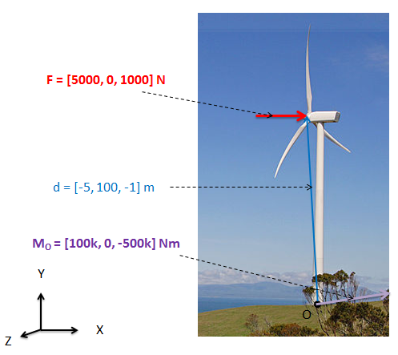

Moment of a Force about a Point
Forces acting on extended bodies will often tend to rotate the body about some point. This point can either be the center of mass of the body, or some point that constrained in a way that prevents motion (like the hinge on a door). The tendency a force to rotate a body about any given point, called the moment, is equal to the magnitude of the force times the distance between the given point on the body and the line of action of the force.
In 2-D examples like the one above, moments that cause counter-clockwise rotations are said to have positive magnitudes while moments that cause a clockwise rotation are said to have negative magnitudes. This means that the example above is has a magnitude of -(F * d).
Using the Cross Product to Find Moment about a Point:
Finding the minimum distance between the line of action of a force and the point of rotation can become difficult with more complex problems. Another way to calculate the moment is to use cross products. Specifically, the moment of F about P is equal to the distance vector from P to any point along the force's line of action (d) cross the force vector (F).
No matter what point d goes to along the line of action of F, the cross product will result in the same answer. The moment vector \( \mathrm{\mathbf{M}_P} \), which is always assumed to travel through point P, will indicate the magnitude, axis of rotation and direction of rotation of the moment. This formula works for both problems in 2D and 3D space.
Now let us readdress the earlier statement about counter-clockwise rotations being positive and clockwise rotations being negative for 2D problems. This is derived from the cross product. In any 2D problem, where both d and F lie in the XY plane, the cross product of d and F will be in the Z direction (either into or out of the page). In cases where the force would tend to cause clockwise rotations (as in A below) d cross F results in a moment vector in the negative Z direction. Likewise, where d cross F results in counter-clockwise rotations (as in B below) d cross F results in a moment vector in the positive Z direction.
Worked Problems
Worked Problem 1:
Find the moment wind force F exerts about point O. Report the moment as a vector.
|
Work
|
Comments |
| \[ \mathrm{ \mathbf{M}_O = \mathbf{d} \times \mathbf{F} }\] \[ \mathrm{ \mathbf{M}_O = [-5, 100, -1]\text{ m} \times[5000, 0, 1000] \text{ N} }\] \[ \mathrm{ \mathbf{M}_O = [100000, 0, -500000] \text{ Nm} }\] |
Since the F and d vectors are already given (F being the force vector and d being the distance vector from O to the point of application of the wind force), the only step needed to find the moment is to calculate d cross F. |
| \[ \mathrm{ \text{Magnitude }=sqrt{-500000^2+100000^2} }\] \[ \mathrm{ \text{Magnitude }=509902 \text{ Nm} }\]  |
Here a few more calculations are done to find the magnitude of the moment and the moment is shown drawn into the original diagram. |
Worked Problem 2:
Find the magnitude of \( \mathrm{\mathbf{F}_2} \) needed to counter the moment exerted by \( \mathrm{\mathbf{F}_1} \).
|
Work
|
Comments |
| \[ \mathrm{ \mathbf{M}_{F1} = \mathbf{d} \times \mathbf{F} }\] \[ \mathrm{ \mathbf{M}_{F1} = [12, 0, 0]\text{ ft} \times[0, -30, 0] \text{ lbs} }\] \[ \mathrm{ \mathbf{M}_{F1} = [0, 0, -360] \text{ ft lbs} }\] |
\( \mathrm{\mathbf{F}_2} \) needs to exert a moment of equal and opposite magnitude to the moment exerted by \( \mathrm{\mathbf{F}_1} \) in order keep the body in equilibrium. We will first solve for the moment exerted by \( \mathrm{\mathbf{F}_1} \). |
|
\[ \mathrm{
\mathbf{M}_{F1} = -\mathbf{M}_{F2}
}\]
\[ \mathrm{
-360 \text{ ft lbs} = - (3 \text{ ft} * F_2 \text{ lbs})
}\]
The value (3 ft * \( \mathrm{\mathbf{F}_2} \)) is positive because it produces a counter-clockwise rotation. \[ \mathrm{ 120 \text{ lbs} = F_2 }\] |
Because the moment exerted by \( \mathrm{\mathbf{F}_1} \) is 360 ft lbs in the negative Z direction, we need \( \mathrm{\mathbf{F}_2} \) to exert a moment of 360 ft lbs in the positive Z direction to counter it. Knowing that the line of action of \( \mathrm{\mathbf{F}_2} \) is a minimum of 3 ft from the point of rotation allows us to solve for the magnitude of \( \mathrm{\mathbf{F}_2} \). |
 |
| Author: Jacob Moore has liscenced this work under a Creative Commons Attribution-NonCommercial 3.0 Unported License. |